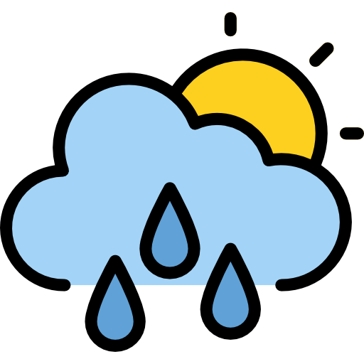
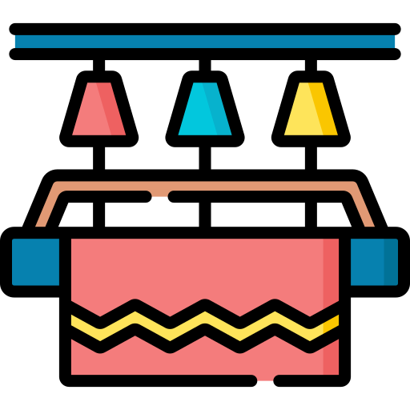

Upcoming Events
Bicentennial Celebration Planning
March 20, 2025 • 7:00 PM
Join local business owners to discuss preparations for the 2025 Bicentennial celebrations. Networking opportunity with city officials and cultural organizations.
Learn MoreCurrent Weather

22°C
Partly Cloudy
Wind Speed: 5 mph
Humidity: 45%
Tourism Guide
"Expert guides for Sucre's historical sites"
contact@sucretours.com
+591-4-6461234
Traditional Textiles
"Authentic Bolivian textiles handcrafted by local artisans"
info@sucretextiles.com
+591-4-6467890
Colonial Museum
"Explore Sucre's rich colonial history"
museum@casalibertad.com
+591-4-6465678